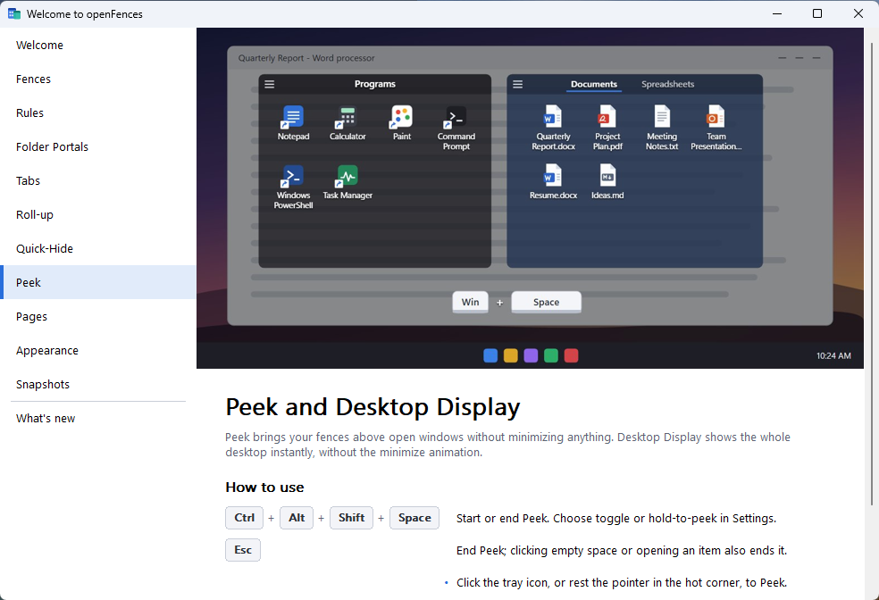
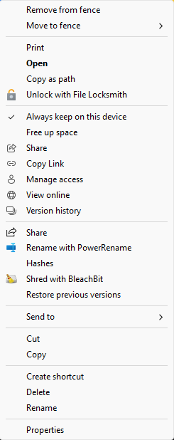
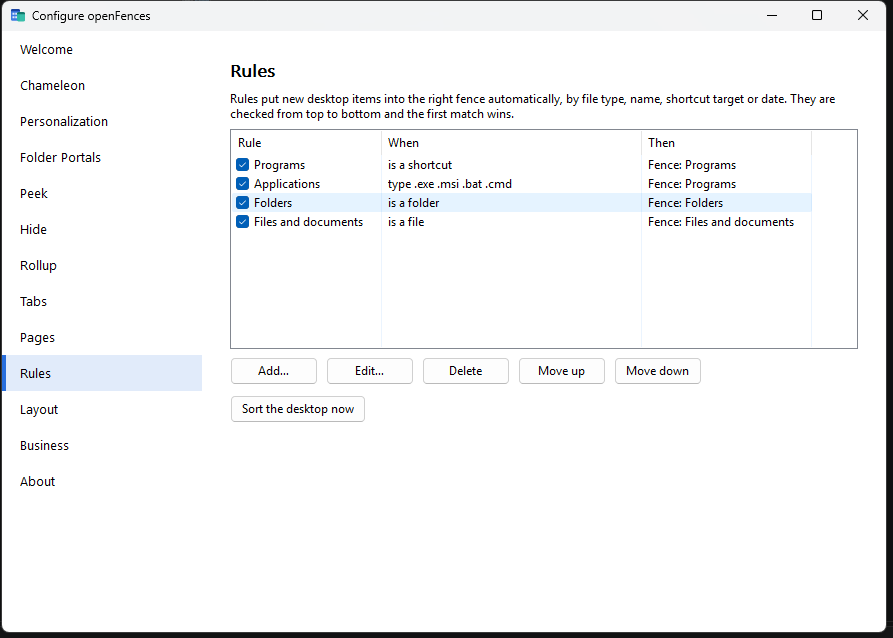
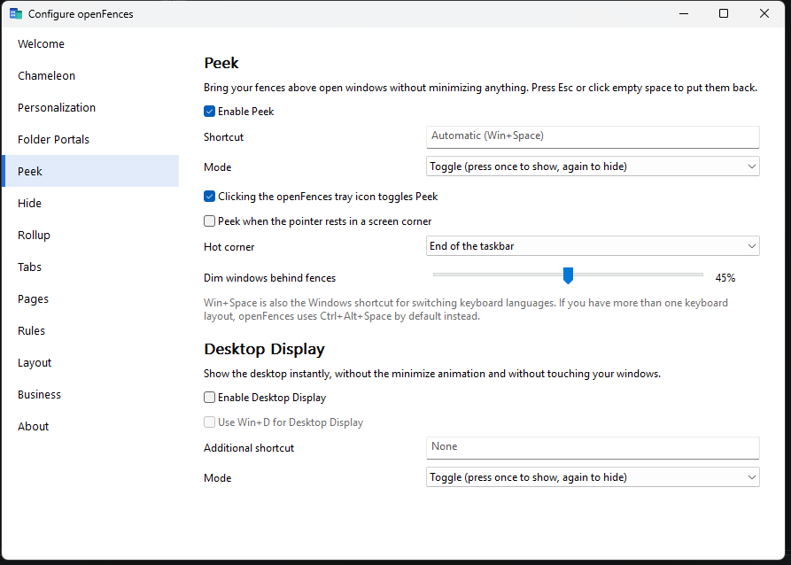
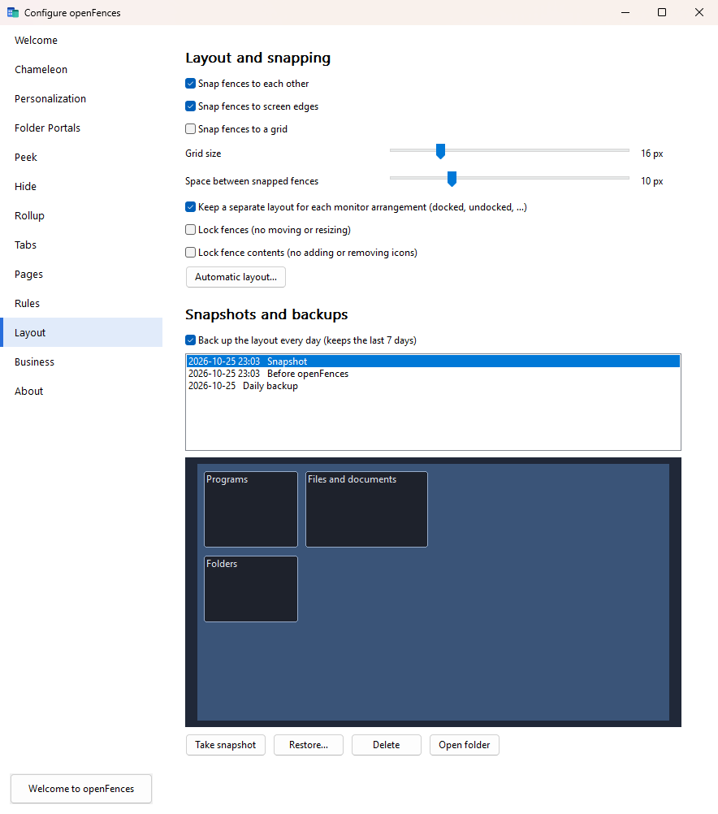

openFences User Guide
openFences tidies your Windows desktop. It gathers your icons into labeled, see-through panels called fences that you can move, resize, roll up, hide and sort automatically.
- Windows 10 & 11 (64-bit)
- Free and open source
- Version 1.0.2
Your files stay exactly where they are. A fence is a view of icons that already live on your desktop, so nothing is copied or moved unless you ask. If you ever close openFences, your normal Windows desktop comes straight back.
1. Drag a rectangle on an empty part of the desktop to make a fence. 2. Drag a few icons into it. 3. Double-click an empty part of the desktop to hide everything, then double-click again to bring it back.
Ideas for using openFences
| If you… | Try |
|---|---|
| Play games | Put launchers in a Games fence and roll it up so it stays out of sight until you point at it. |
| Study | Make one fence (or one tab) per class, or a separate page for school. |
| Download a lot | Add a Folder Portal of your Downloads folder in list view, sorted by date, and keep the desktop itself empty. |
| Take screenshots or receive invoices | Add rules that sort Screenshot* files and anything named *invoice* into their own fences automatically. |
| Want a calmer desktop | Turn on Chameleon or Icon Tint, or let icons hide automatically while you work. |
| Need bigger targets | Use extra large icons for a fence, and Folder Portals so important folders are one click away. |
2Installing
Requirements
- Windows 10 or Windows 11, 64-bit edition
- About 10 MB of disk space
- Administrator rights to install the MSI (openFences itself runs as a normal user, and the portable version needs no rights at all)
Running setup
- Double-click
openFences-1.0.2-x64.msi. If Windows SmartScreen shows "Windows protected your PC", choose More info → Run anyway. The installer isn't code-signed yet, so Windows doesn't recognize the publisher. - On the welcome page click Next, then confirm or change the installation folder (normally
C:\Program Files\openFences). - On the Startup page, choose whether openFences should start automatically when you sign in. It's checked by default, and you can change it later at any time.
- Click Install and approve the Windows security prompt.
- Leave Launch openFences now ticked and click Finish.
Portable version (no installation)
Prefer not to install anything, or want openFences on a USB stick? Download openFences-1.0.2-x64-portable.zip, extract it to any
folder, and run openFences.exe. No administrator rights are needed.
- The folder contains a small file called
openFences.portable. While it's there, openFences keeps its settings, snapshots and logs in aDatafolder next to the program instead of in your user profile, so everything stays together. Delete that file to store settings the normal way. - Everything works the same, except that there's no Start menu shortcut and no extra openFences submenu in the desktop's right-click menu. openFences' own desktop menu is still there.
- If you turn on Start openFences when I sign in, Windows starts this copy from this folder. Turn the option off before you move or delete the folder.
The first start
The first time openFences runs, it:
- Saves a snapshot of your desktop called Before openFences, so you can always go back (see Snapshots).
- Creates three fences, Programs, Folders and Files and documents, and sorts your existing icons into them. Shortcuts and apps go to Programs, folders to Folders, and other files to Files and documents. Special icons such as Recycle Bin and This PC stay outside.
- Adds an icon to the notification area next to the clock. Click it to Peek, or right-click it for the menu.
- Opens the Welcome to openFences window, a short built-in tour of every feature.
From the tray menu you can:
- Peek at your fences or show the desktop
- Hide fences and icons
- Switch pages
- Lock fences
- Take a snapshot
- Open Welcome to openFences (the built-in tour)
- Open Configure openFences (the settings)
- Turn Start openFences when I sign in on or off
- Exit openFences
If you don't like the starter fences, delete them, or rearrange them however you like. Your icons are never deleted along with a fence.
Windows sometimes tucks new icons into the overflow area. Click the ^ arrow next to the clock and drag the openFences icon onto the taskbar to keep it visible.
The Welcome to openFences window
openFences has a short guide built in. The Welcome to openFences window lists the main features on the left: Fences, Rules, Folder Portals, Tabs, Roll-up, Quick-Hide, Peek, Pages, Appearance and Snapshots. Each topic shows a picture, a short explanation and a How to use list with the keys and mouse actions involved. The Peek page always shows the shortcut that's active on your PC.

- Open settings jumps straight to that feature's page in Configure openFences.
- Learn more in the user guide opens this guide at the matching section.
- The last topic, What's new, lists the highlights of the version you're running.
- The first topic, Welcome, ends with the version you're running, who created openFences and its license, and a Report a bug or idea button that opens the project's GitHub Issues page.
To open it, use any of these:
- the Welcome to openFences button at the bottom of the Configure openFences sidebar
- Settings → Welcome
- the tray menu
openFences.exe --welcome
It opens by itself the first time openFences starts. After an update it opens on What's new; to stop that, untick Show what's new after openFences is updated in Settings → Welcome.
3Fences
Parts of a fence
- 1
- Menu button (≡): opens the fence menu with view, color, tab and lock options. Right-clicking an empty part of the fence opens the same menu.
- 2
- Title or tabs: drag here to move the fence. Double-click to roll it up. A fence with several tabs shows them here.
- 3
- Delete button (×): appears when you point at the fence. Deleting a fence never deletes its icons; they go back to the desktop.
- 4
- Icons: work just like icons on the desktop.
- 5
- Scroll bar: appears when a fence holds more icons than fit. You can also scroll with the mouse wheel or touchpad.
- 6
- Edges: drag any edge or corner to resize the fence.
Creating a fence
Drag a rectangle on an empty part of the desktop with the left mouse button. When you let go, a menu appears:
- Create fence here makes an empty fence the size of your rectangle.
- Create fence with the N selected icon(s) makes the fence and puts the icons you circled into it.
- Create folder portal here… asks for a folder and makes a fence that shows that folder's contents (see Folder Portals).
Type a name for the new fence and press Enter. You can also right-click the desktop and choose New fence here. The rectangle needs to be at least about the size of a few icons before the menu appears.
Moving, resizing, renaming and deleting
| To… | Do this |
|---|---|
| Move a fence | Drag its title bar. Fences snap into line with each other, with an even gap between them, and to the edges of the screen. |
| Resize a fence | Drag any edge or corner. |
| Rename a fence | Fence menu → Rename fence, or click the fence and press F2 with no icon selected. Type the name and press Enter (Esc cancels). |
| Delete a fence | Click × in the title bar, or fence menu → Delete fence. Its icons stay on the desktop. |
| Move a fence to another monitor | Drag it there. Each fence remembers its monitor and its position relative to the screen size. |
Snapping can be adjusted or switched off in Settings → Layout, which also offers a grid to snap to.
The fence menu
- Rename fence (or Rename tab)
- Tabs: add a tab, add a Folder Portal tab, or move the current tab into its own fence.
- View: icon size (small, medium, large, extra large or the default), and sort order (custom, name, type or date modified). Folder Portals also offer Icons, List and Horizontal list layouts.
- Roll up: collapse the fence to its title bar.
- Color: Charcoal, Ocean, Teal, Forest, Violet, Crimson, Amber, Glass or any custom color.
- Icon tint: give this fence's icons a single color so they stand out.
- Keep visible during Quick-Hide and Show on all pages.
- Lock position and size, Lock contents.
- Select all, Paste, Configure openFences…, Delete fence.
4Working with icons
Icons in fences behave like normal desktop icons. They're the same files and shortcuts, and they use the same Windows menus.
Putting icons into fences
- Drag icons from the desktop into a fence, or from one fence to another.
- Drop icons onto a tab. Hold them over a tab for half a second to switch to it.
- Right-click an icon → Move to fence → choose a fence.
- Drag files from File Explorer into a fence. They're moved or copied onto your desktop and appear in that fence. Like Explorer, openFences moves files on the same drive and copies them from another drive; hold Ctrl to copy or Shift to move.
Taking icons out
- Drag an icon out of the fence onto empty desktop, or right-click it → Remove from fence.
- Drag it into a File Explorer window to move the file to that folder.
Everyday actions
- Open: double-click, or select and press Enter.
- Right-click for the full Windows menu: Open with, Send to, Cut, Copy, Properties, OneDrive options and so on.
- Rename: F2, or right-click → Rename.
- Delete: Delete sends the file to the Recycle Bin. Shift+Delete deletes it permanently.
- Select several: Ctrl+click, Shift+click, drag a rectangle inside the fence, or Ctrl+A.
- Reorder: drag icons within a fence. This switches the fence to custom order.

openFences draws all your desktop icons, including the ones that aren't in a fence. You can drag those loose icons anywhere on the desktop and they stay put. Right-click empty desktop → Arrange desktop icons lines them up again.
5Sorting automatically with rules
Rules put new desktop items into the right fence for you. Save a screenshot, download an invoice or create a shortcut, and it lands in the fence you chose instead of cluttering the desktop. Manage them in Settings → Rules.

What a rule can look at
| Condition | Example |
|---|---|
| File types | .png .jpg puts images into an Images fence |
| Name is like | *invoice*, where * matches anything and ? matches one character |
| Name matches (regular expression) | ^PRJ-\d{3} matches project codes such as PRJ-042 plan.docx |
| Shortcut points into | C:\Games puts game shortcuts into a Games fence |
| Item is | a file, a folder or a shortcut |
| Modified / created more than N days ago, or within N days | untouched for 30 days goes to an Archive fence |
A rule can require all of its conditions or any of them. Its action is either Put it in a fence or Move the file to a folder, which keeps that type of file off the desktop entirely.
- Rules are checked from top to bottom and the first match wins. Use Move up / Move down to set priority.
- Rules act on new items. To sort everything that's already loose on the desktop, click Sort the desktop now (also on the desktop right-click menu).
- Rules never take an icon out of a fence you put it in yourself.
Office keeps your files where you put them. When Word or Excel saves by replacing the file, the document stays in its fence.
6Folder Portals
A Folder Portal is a fence that shows the live contents of any folder, such as Downloads, Documents, a OneDrive or SharePoint folder, or a network share. Anything added to, renamed in or removed from that folder shows up straight away.
- Create one by drawing a rectangle on the desktop → Create folder portal here…, right-clicking the desktop → New folder portal here…, or from Settings → Folder Portals. Then pick the folder.
- Browse inside it: double-click a subfolder to open it inside the portal. Click the ‹ bar at the top (or press Backspace) to go back. Hold Ctrl while double-clicking to open the folder in File Explorer instead. To always use Explorer, untick Allow navigation in the fence menu.
- Change the layout in fence menu → View: Icons, List or Horizontal list. Sorting by date modified keeps the newest downloads on top.
- Drop files onto a portal to move or copy them into that folder, with the usual Windows progress and conflict dialogs.
- Refresh with F5, or open the folder in Explorer from the fence menu.
If a folder can't be reached, for example when a network drive isn't connected yet after sign-in, the portal shows Folder unavailable … Retrying. It keeps trying in the background and fills in as soon as the folder is available.
7Tabs
Tabs stack several fences into one panel, which saves space. A tabbed fence can mix ordinary fences and Folder Portals.
- Switch tabs by clicking them. Reorder them by dragging sideways.
- Separate a tab by dragging it down, out of the title bar, or with fence menu → Tabs → Move this tab to its own fence.
- Add a tab from fence menu → Tabs. Color a tab from fence menu → Tab color; the color also tints the fence while that tab is showing.
- Pick a tab style in Settings → Tabs: Flat, Segmented, Rounded, or Hidden (switch tabs from the menu only).
8Rolling fences up
Double-click a fence's title bar to roll it up so only the title shows. A rolled-up fence opens again when you point at it, and rolls back up when the pointer leaves. Double-click the title again to keep it open.
In Settings → Rollup you can choose when a rolled-up fence opens:
- as soon as the pointer moves over it
- after the pointer rests on it for a moment (adjustable delay), so it doesn't pop open by accident
- only when you click its title
Fences placed against the top or bottom edge of the screen roll up automatically. A fence docked at the bottom unrolls upward, away from the edge. You can turn this off in the same settings page.
9Quick-Hide
Double-click any empty part of the desktop to fade out all fences and icons and enjoy a clean wallpaper. Double-click again to bring everything back. openFences remembers the choice, even after a restart.
- Keep something visible: fence menu → Keep visible during Quick-Hide. For a loose desktop icon, right-click it → same option. Icons that stay visible keep working as usual: double-click one to open it and everything else stays hidden. Only a double-click on empty desktop brings everything back.
- Hide automatically: Settings → Hide → Hide automatically while the desktop is not in use. Icons then show only when the desktop is active or you move the pointer over it.
- Hide from the tray menu or the desktop menu: Hide fences and icons.
- If you'd rather double-clicking did nothing, untick the option in Settings → Hide.
10Peek and Desktop Display
Peek
Peek brings your fences above your open windows without minimizing anything. Grab what you need, then carry on.
- Start Peek with Win+Space, by clicking the openFences tray icon, or by resting the pointer in the hot corner if you turned it on.
- End Peek with Esc, by clicking empty space, by pressing the shortcut again, or simply by opening something or switching to another app.
- Hold mode: fences show only while you hold the keys down, and disappear when you let go.
Windows also uses Win+Space to switch keyboard languages. If you have more than one keyboard layout, or another program already uses it, openFences uses Ctrl+Alt+Space instead, and if that is taken too, Ctrl+Alt+Shift+Space. Settings → Peek shows the shortcut in use. Click the Shortcut box and press any combination to change it, or press Backspace to go back to automatic.

Desktop Display
Desktop Display is an instant "show desktop". It paints your wallpaper and fences above every window at once, with no minimize animation and without touching your windows, so they're exactly as you left them afterwards. Turn it on in Settings → Peek → Enable Desktop Display. Then use the tray menu's Show desktop, give it a shortcut, or tick Use Win+D for Desktop Display to replace the Windows shortcut.
11Pages
Pages give you several desktops of fences, for example Work, Play and School, and you can flick between them.
- Add a page: right-click the desktop → Pages → New page. The new page starts empty.
- Switch pages: press and hold at the far left or right edge of the screen and pull toward the middle. The fences slide over and a row of dots shows which page you're on. You can also choose a page from the desktop menu, the tray menu or Settings → Pages.
- Rename or delete the current page from the desktop menu's Pages submenu. Deleting a page removes its fences, but the icons stay on the desktop.
- A fence on every page: fence menu → Show on all pages.
- Icons that aren't in a fence are shared by all pages.
12Appearance
| Setting | Where | What it does |
|---|---|---|
| Background color and opacity | Settings → Personalization | The default fence color and how see-through fences are. Individual fences can override it from the fence menu. |
| Darken title bars, corner roundness, title text size | Settings → Personalization | Fine-tune the look of every fence. |
| Match fence color to the wallpaper | Settings → Personalization | Picks a fence color that blends with your wallpaper. |
| Icon size | Settings → Personalization | Small, medium, large or extra large. Each fence can choose its own size under View. |
| Icon Tint | Settings → Personalization; fence menu → Icon tint | Colors all icons, or just one fence's icons, with a single shade to reduce visual noise. |
| Chameleon | Settings → Chameleon | Fades icons into the wallpaper (optionally without color). They return to normal when you point at them. |
13Snapshots, backups and monitors
A snapshot saves your whole layout: fences, tabs, pages, colors and rules. Restore one whenever an experiment goes wrong.

- Take snapshot: give it a name such as "Before tidying up". Also available from the tray menu.
- Restore…: shows what you're restoring and asks first. Your current layout is saved as a snapshot before anything changes, so a restore can be undone.
- Daily backups: openFences saves a backup once a day and keeps the last 7.
- Before openFences: the snapshot taken on the first start. Restoring it puts all icons back outside fences.
- Automatic layout…: starts again with the Programs / Folders / Files fences and sorts the desktop into them. A snapshot is saved first.
Laptops, docks and multiple monitors
openFences keeps a separate layout for each monitor arrangement. Your docked layout with two screens and your undocked laptop layout are remembered separately, and the right one comes back automatically when you plug in or unplug. The first time it sees a new arrangement, openFences starts from the most similar layout it knows. You can switch this off in Settings → Layout.
14Locking fences
- Lock fences (desktop menu, tray menu or Settings → Layout) stops fences from being moved, resized, created or deleted.
- Lock fence contents stops icons from being added to or removed from fences.
- To lock a single fence, use fence menu → Lock position and size or Lock contents.
At work, your administrator may lock fences for you. The options then appear greyed out.
15Starting with Windows
openFences can start automatically every time you sign in.
- Turn it on or off in Settings → Welcome → Start openFences when I sign in to Windows, or from the tray menu.
- The installer's Startup checkbox sets the default for everyone on the PC. It's applied the first time each person runs openFences.
- If you disable openFences in Task Manager → Startup apps (or Settings → Apps → Startup), openFences shows the option as off. Turning it back on in openFences re-enables it there too.
16Settings at a glance
Open Configure openFences from the tray menu, the desktop menu or any fence menu. Changes take effect immediately; there's no Save button.
| Section | What you'll find |
|---|---|
| Welcome | Start at sign-in, show or hide icons that aren't in a fence, show what's new after updates, quick actions (Welcome to openFences, create a fence, sort with rules, automatic layout), tips |
| Chameleon | Fade icons into the wallpaper |
| Personalization | Fence color, opacity, title bars, corners, title size, wallpaper matching, icon size, icon tint |
| Folder Portals | Create a portal, default layout, open subfolders inside portals |
| Peek | Peek shortcut and mode, tray icon click, hot corner, dimming, Desktop Display |
| Hide | Double-click to hide, hidden right now, hide automatically |
| Rollup | When rolled-up fences open, delay, roll up at screen edges |
| Tabs | Tab style and tab colors |
| Pages | Turn pages and edge-swiping on or off; add, rename, delete and switch pages |
| Rules | Create, edit, order and run sorting rules |
| Layout | Snapping, separate layouts per monitor arrangement, locks, automatic layout, snapshots and daily backups |
| Business | Templates, export and import layouts, settings managed by your organization |
| About | Version (and whether this is the portable version), who created openFences, copyright and license, open this user guide, report a bug or idea, view the license, where settings and logs are kept, exit openFences |
17Keyboard and mouse reference
| Action | How |
|---|---|
| Create a fence | Drag a rectangle on empty desktop |
| Hide / show everything | Double-click empty desktop |
| Roll up / down | Double-click a title bar |
| Combine into tabs | Drop a title onto another title |
| Peek | Win+Space (or the fallback shown in Settings → Peek), Esc to end |
| Switch page | Hold at the screen edge and pull |
| Open the selected icons | Enter |
| Rename an icon / a fence | F2 |
| Delete to Recycle Bin | Delete |
| Select all in a fence | Ctrl+A |
| Cut / Copy / Paste | Ctrl+X / C / V |
| Move the selection | Arrow keys (Shift to extend) |
| Go up a folder (portal) | Backspace |
| Refresh | F5 |
18For IT administrators
Some ways organizations use fences:
- Company documents on every desktop: point a Folder Portal at a network or SharePoint folder holding the handbook, policies or HR forms. Update the folder centrally and every desktop shows the new files.
- Keep certain files off desktops: a rule with the action Move the file to a folder moves chosen file types somewhere else as soon as they're saved to the desktop. This is useful for patient or client data.
- Organize by client or project: one fence or tab per client, with name rules such as
ACME*. - Kiosks and shared PCs: the Kiosk template plus the
LockLayoutandLockContentpolicies give a fixed desktop that users can't rearrange.
Silent installation
msiexec /i openFences-1.0.2-x64.msi /qn AUTOSTART=1 (AUTOSTART=0 to leave start-at-sign-in off)
msiexec /x openFences-1.0.2-x64.msi /qn (uninstall)The package installs per machine to C:\Program Files\openFences. It adds a Start menu shortcut and an openFences submenu
to the desktop's right-click menu. On Windows 11 the submenu appears under Show more options.
Policies
| Registry value | Effect |
|---|---|
HKLM\SOFTWARE\Policies\openFences\ConfigPath (REG_SZ) | A template or exported layout, e.g. \\server\share\fences.json, applied at every sign-in |
…\LockLayout (DWORD) | 1 = fences locked, 0 = unlocked. Users can't change it |
…\LockContent (DWORD) | 1 = fence contents locked |
…\DisableSettings (DWORD) | 1 = Configure openFences can't be opened |
…\Disabled (DWORD) | 1 = openFences doesn't run on this PC |
HKCU\Software\openFences\Disabled (DWORD) | 1 = openFences doesn't run for this user |
Templates, export and import
Settings → Business lists the built-in templates and can apply one:
- Default: Programs, Folders and Files.
- Work: Apps, Documents and Spreadsheets tabs, Images, a Downloads portal, and an archive for files untouched for 30 days.
- Kiosk: one locked fence of shortcuts, with every other file moved off the desktop.
Export layout… saves the current fences, rules and appearance as a template file. You can then distribute it with
ConfigPath or import it on another PC.
Command line
Every command is passed to the running copy of openFences, so they work well from scripts and shortcuts.
openFences.exe --settings [page] --welcome [topic] --peek --desktop-display
--toggle-hide | --hide | --show --toggle-lock
--next-page | --prev-page | --page N --new-fence
--apply-rules --snapshot [name] --restore <file>
--export <file> --import <file> --apply-template <file>
--automatic-layout --refresh --shutdown
--no-welcome (don't open Welcome to openFences by itself, for scripted deployments)Where things are stored
| Path | Contents |
|---|---|
%APPDATA%\openFences\config.json | Settings, rules and layouts |
%APPDATA%\openFences\Backups\ | Snapshots and daily backups |
%LOCALAPPDATA%\openFences\logs\ | Log file (start with --verbose for more detail) |
%LOCALAPPDATA%\openFences\Crashes\ | Crash reports |
19Troubleshooting
My desktop icons have disappeared
- They may be hidden: double-click empty desktop, or untick Hide fences and icons in the tray menu.
- They may be on another page: right-click the desktop → Pages.
- Check Settings → Welcome → Show desktop icons that are not in a fence.
- Exiting openFences always brings back the normal Windows desktop with all your icons.
The Peek shortcut does nothing
Another program or Windows itself may be using it. Open Settings → Peek to see the active shortcut, or choose a different one.
Reporting a bug or suggesting a feature
Use Settings → About → Report a bug or idea (or the same button on the Welcome window's first topic). It opens
github.com/Dos-si-Doge/openFences/issues. Mention your openFences version
(shown on the About page) and Windows version. If it's about a crash or odd behaviour, attach openFences.log from
Settings → About → Open log folder; start openFences with --verbose first for more detail.
A portal is empty or says "Folder unavailable"
The folder can't be reached, for example because the network drive isn't connected or the cloud folder is still syncing. openFences retries automatically; press F5 on the portal to try immediately.
My fences moved after docking or changing resolution
openFences keeps one layout per monitor arrangement, so a new arrangement may start from a similar layout. Arrange it once and it's remembered. Taking a snapshot of each setup (docked and undocked) also helps.
Fences or icons are on the wrong monitor
- Check which screen is the main display in Windows Settings → System → Display. Loose icons start on the main display.
- To reset the arrangement, press Win+P, choose PC screen only, then switch back to Extend.
- Other tools that manage the desktop or monitors, such as DisplayFusion, Actual Multiple Monitors or NVIDIA nView, can get in the way. Close them temporarily to see whether the problem goes away.
My Desktop folder moved (for example to OneDrive)
Nothing to do. openFences notices when Windows moves or redirects the Desktop folder, for instance when OneDrive folder backup is turned on, and follows it. Fence membership is kept because icons are matched by name.
Moving to a new PC
On the old PC, use Settings → Business → Export layout…, or copy a snapshot file from
%APPDATA%\openFences\Backups. On the new PC, use Import layout…, or put the snapshot in the same folder and restore it
from Settings → Layout. Icons are matched by name, so a different user name or Desktop path doesn't matter.
Explorer restarted, or the taskbar disappeared for a moment
openFences notices when Explorer restarts and reattaches its fences and tray icon automatically.
I can't find the openFences entries when right-clicking the desktop on Windows 11
openFences' own commands are at the top of its desktop menu. The installer's extra openFences submenu is under Show more options.
openFences closed unexpectedly
Your normal desktop icons are restored straight away, and openFences restarts by itself (up to three times in five minutes). The log in
%LOCALAPPDATA%\openFences\logs helps when reporting a problem.
I want to start over
Use Settings → Layout → Automatic layout… for the starter fences, or restore the Before openFences snapshot to remove all fences.
20Uninstalling
Open Settings → Apps → Installed apps (or Control Panel → Programs and Features), find openFences and
choose Uninstall. Setup closes openFences and removes its start-at-sign-in entry. Your desktop looks exactly as it did
before, because openFences never moves Windows' own icon positions. Your settings and snapshots stay in %APPDATA%\openFences in case
you reinstall; delete that folder to remove them too.
Portable version: turn off Start openFences when I sign in (Settings → Welcome), exit openFences from the tray
menu, then delete its folder. Your settings go with it, because they're stored in its Data folder.